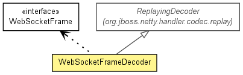

org.jboss.netty.handler.codec.http.websocket
Class WebSocketFrameDecoder
java.lang.Object
 org.jboss.netty.channel.SimpleChannelUpstreamHandler
org.jboss.netty.handler.codec.replay.ReplayingDecoder<VoidEnum>
org.jboss.netty.handler.codec.http.websocket.WebSocketFrameDecoder
org.jboss.netty.channel.SimpleChannelUpstreamHandler
org.jboss.netty.handler.codec.replay.ReplayingDecoder<VoidEnum>
org.jboss.netty.handler.codec.http.websocket.WebSocketFrameDecoder
- All Implemented Interfaces:
- ChannelHandler, ChannelUpstreamHandler
public class WebSocketFrameDecoder
- extends ReplayingDecoder<VoidEnum>

Decodes ChannelBuffers into WebSocketFrames.
For the detailed instruction on adding add Web Socket support to your HTTP
server, take a look into the WebSocketServer example located in the
org.jboss.netty.example.http.websocket package.
- Version:
- $Rev: 2342 $, $Date: 2010-07-07 14:07:39 +0900 (Wed, 07 Jul 2010) $
- Author:
- The Netty Project, Mike Heath (mheath@apache.org), Trustin Lee
| Methods inherited from class org.jboss.netty.handler.codec.replay.ReplayingDecoder |
actualReadableBytes, channelClosed, channelDisconnected, checkpoint, checkpoint, decodeLast, exceptionCaught, getState, internalBuffer, messageReceived, setState |
| Methods inherited from class java.lang.Object |
clone, equals, finalize, getClass, hashCode, notify, notifyAll, toString, wait, wait, wait |
DEFAULT_MAX_FRAME_SIZE
public static final int DEFAULT_MAX_FRAME_SIZE
- See Also:
- Constant Field Values
WebSocketFrameDecoder
public WebSocketFrameDecoder()
WebSocketFrameDecoder
public WebSocketFrameDecoder(int maxFrameSize)
- Creates a new instance of
WebSocketFrameDecoder with the specified maxFrameSize. If the client
sends a frame size larger than maxFrameSize, the channel will be closed.
- Parameters:
maxFrameSize - the maximum frame size to decode
decode
protected Object decode(ChannelHandlerContext ctx,
Channel channel,
ChannelBuffer buffer,
VoidEnum state)
throws Exception
- Description copied from class:
ReplayingDecoder
- Decodes the received packets so far into a frame.
- Specified by:
decode in class ReplayingDecoder<VoidEnum>
- Parameters:
ctx - the context of this handlerchannel - the current channelbuffer - the cumulative buffer of received packets so far.
Note that the buffer might be empty, which means you
should not make an assumption that the buffer contains
at least one byte in your decoder implementation.state - the current decoder state (null if unused)
- Returns:
- the decoded frame
- Throws:
Exception
Copyright © 2008-2011 JBoss, a division of Red Hat, Inc.. All Rights Reserved.